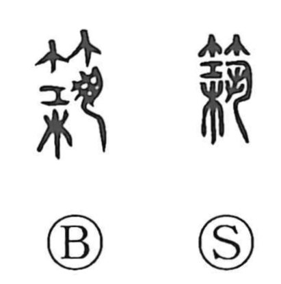

築

Uncategorized
Kun: kizuku | On: chiku
to build ・ to construct ・ to erect
Explanation
This character is a phono-semantic graph centered on 筑 as its phonetic core. In 筑, the lower element depicts gripping a tool firmly with both hands, while 竹 evokes a bamboo framework or cage. Together they picture ramming earth or clay into a frame and compacting it with a tool to form a solid foundation. 筑 thus underlies 築; the later addition of 木, “wood,” points to the technique of hanchiku (版築), tamping soil between wooden boards. From this concrete image of building up earthen walls, the character came to mean to build, construct, and erect.